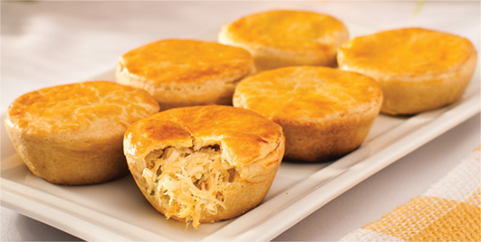

EMPADA DE FRANGO
PREPARO - 40 MIN
RENDIMENTO - 14 PORÇÕES
INGREDIENTES
MASSA:
- 4 xícaras (chá) de farinha de trigo
- 1 ovo
- 1 gema
- 4 colheres (sopa) de manteiga ou margarina
- 1 xícara (chá) de gordura vegetal
- Sal a gosto
- Filme plástico
RECHEIO:
- 500 g de peito de frango cozido e desfiado
- 2 tomates grandes picados
- 1 cebola média picada
- 2 dentes de alho picado
- 1 colher (sobremesa) de pimentão verde picado
- colher (sopa) de azeite
- 1 lata de ervilhas
- Salsinha picada a gosto
- 14 azeitonas verdes sem caroço
- 250 ml de leite
- 1 e 1/2 colheres (sopa) de farinha de trigo
- 2 gemas para pincelar
MODO DE PREPARO
- Coloque todos os ingredientes da massa em uma tigela grande e misture bem até formar uma massa homogênea
- Recomendo que coloque a farinha aos poucos
- Se a massa ficar muito grudenta, adicione mais um pouco de farinha
- Se a massa ficar muito ressecada, adicione mais um pouco de manteira ou margarina
- Embrulhe a massa em filme plástico e deixe descansar enquanto prepara o recheio
- CRefogue no azeite, a cebola, o alho, o tomate e o pimentão
- Acrescente o frango desfiado e refogue mais um pouco
- Junte a farinha de trigo e misture muito bem, acrescentando o leite de uma só vez e mexendo rapidamente
- Coloque as ervilhas, tempere com o sal e acrescente a salsinha
- Depois de engrossar, apague o fogo e reserve
- CForre as forminhas com a massa, separe uma porção e aperte-a contra o fundo e a lateral da forminha
- Não deixe que a massa fique muito grossa, retire o excesso e repita o procedimento com todas as forminhas
- Reserve um pouco da massa para as tampinhas
- Coloque o restante da massa sobre um pedaço grande de filme plástico, cubra-a com outro pedaço de filme e abra-a com um rolo
- Isso é fundamental para a massa não quebrar
- Corte 12 rodelas um pouco maiores que o diâmetro das forminhas e reserve
- Recheie as forminhas com o recheio já frio e acrescente uma azeitona em cada empada
- Tampe com a rodela de massa e aperte as bordas com as pontas dos dedos
- Não use o recheio quente, isso deixará a massa "encruada"
- Pincele a empada com a gema batida e leve para assar até ficarem douradas, cerca de 20 minutos
- Depois de assadas, espere esfriar para desenformar